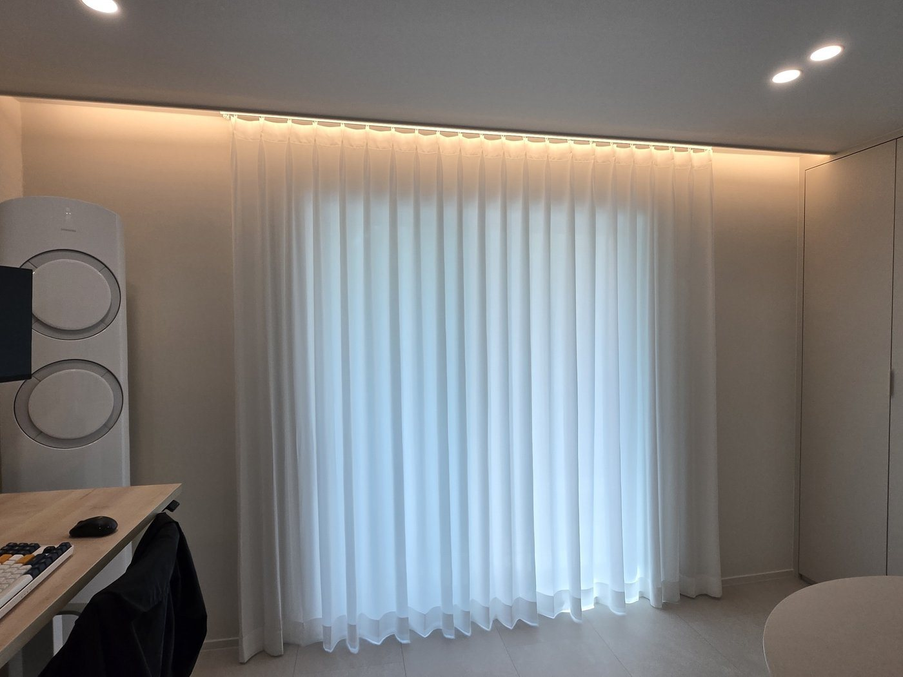
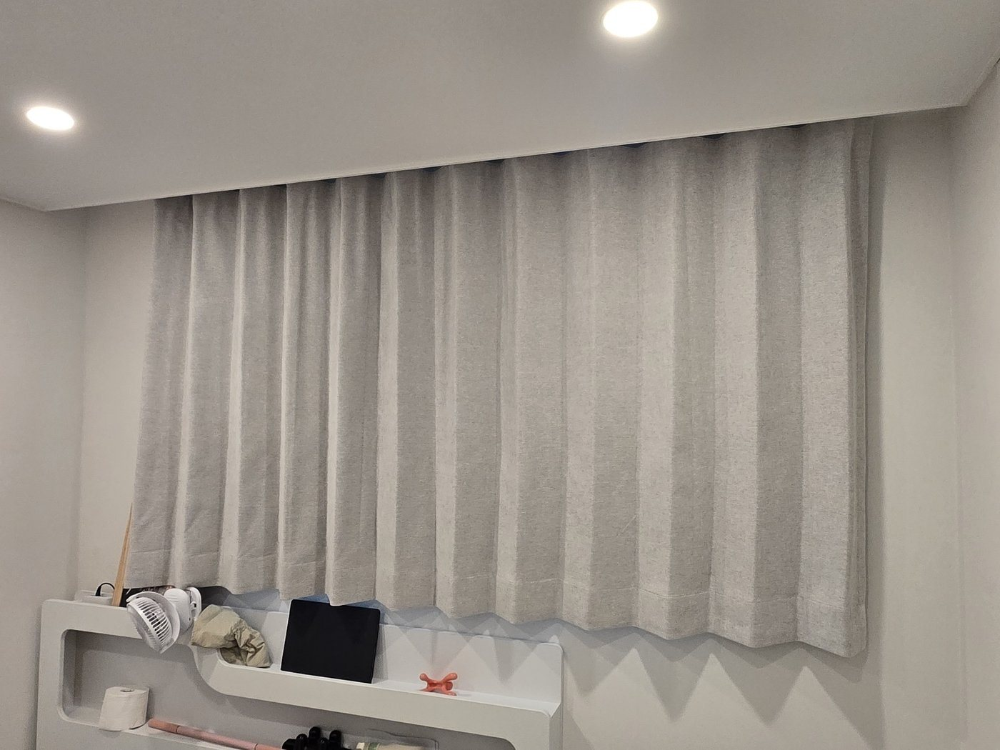
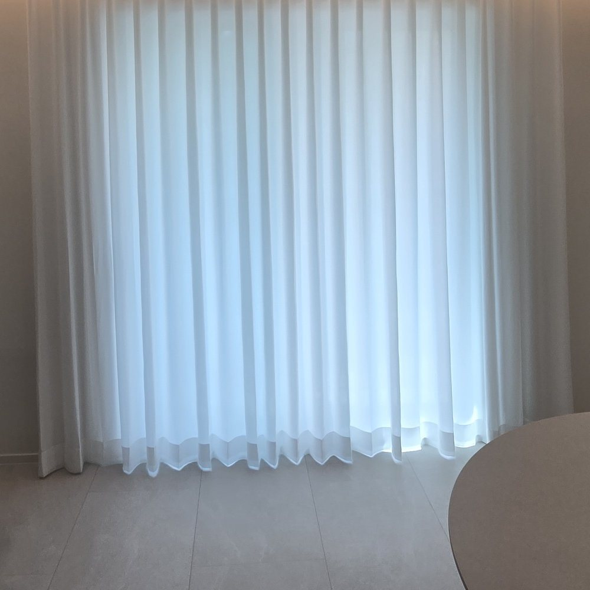

안녕하세요, 수도권 커튼·블라인드 전문 드리움 커튼&블라인드입니다. 이번 현장은 분당 매화마을 주공3단지입니다. 거실과 안방에 필요한 게 서로 달라서, 공간마다 원단과 방식을 다르게 골랐습니다.
이번 시공 요약
- 위치 · 성남 분당 매화마을 주공3단지
- 공간 · 거실 + 안방
- 제품 · 화이트 도톰쉬폰 / 샤넬 암막커튼
- 포인트 · 간접조명 라인 안쪽 레일
거실 — 화이트 도톰쉬폰


일반 쉬폰보다 두께감이 있는 도톰쉬폰은 햇살은 화사하게 들이면서 바깥 시선은 가려 줍니다. 천장 간접조명 라인에 맞춰 레일을 달아, 저녁에 조명을 켜면 빛이 주름을 타고 은은하게 떨어져요.
안방 — 샤넬 암막 한 장으로

복도 쪽으로 난 안방 창은 시선이 더 신경 쓰이는 창이었어요. 창보다 넉넉하게 덮는 샤넬 암막커튼 한 장으로 시선과 빛을 함께 정리했습니다.
도톰쉬폰은 이렇게 빛을 걸러요

원단 조직이 촘촘해 형태는 흐릿하게, 빛은 부드럽게 들어옵니다. 저층이나 앞 동과 가까운 거실에 특히 추천드려요.
드리움은 광명 본사에서 직접 실측하고 시공하며, 서울·경기·인천 전 지역 방문 견적을 무료로 진행합니다. 원단 샘플을 들고 찾아가 창에 직접 대 보며 상담해 드려요.